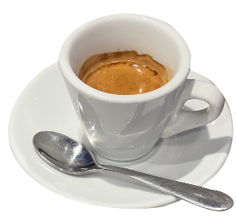
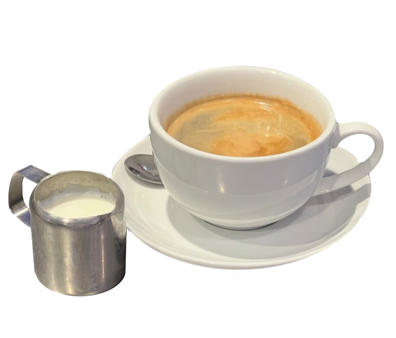
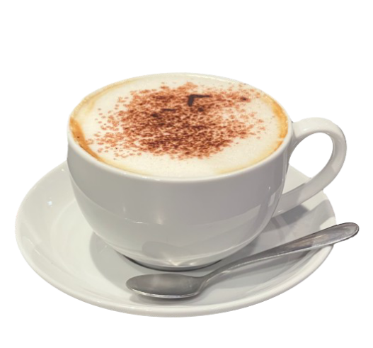
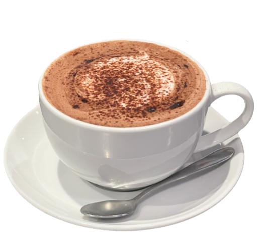
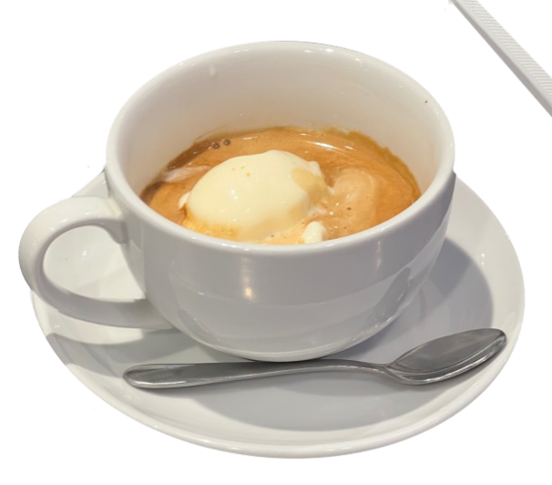

La guida completa al beverage Badiani: dai classici della caffetteria italiana al nuovo Matcha Bar,
fino agli Smoothies e le bevande fredde. Include procedure per servizio al tavolo e Take Away (TW).
Classics
Caffetteria Italiana
Single / Double25-30 sec
Espresso Single

L'essenza del caffè. Estrazione perfetta per un gusto intenso, corpo rotondo e crema persistente.
Dose: 1 shot in tazzina piccola
Estrazione: 25-30 secondi
Crema: Color nocciola, tigrata, elastica
1 · Pulisci e asciuga il portafiltro. Macina la dose al momento.2 · Livella e pressa (tamping) in modo uniforme.3 · Estrai e servi immediatamente (la crema svanisce in fretta).
Doppia dose di energia. Due shot estratti nello stesso tempo per un gusto più ricco.
Dose: 2 shot in tazzina grande o bicchierino
Estrazione: 25-30 secondi (flusso costante)
Crema: Spessa e persistente
1 · Usa il filtro doppio. Macina dose doppia.2 · Tamping deciso e uniforme.3 · Estrai 2 shot in 25-30s.
🥡 Take Away (TW)
Usa cup 4oz o 8oz a richiesta. Coperchio obbligatorio.
Single ShotMilk Foam
Espresso Macchiato
Espresso "macchiato" con una piccola quantità di schiuma di latte calda.
Base: 1 shot espresso
Top: 1-2 cucchiaini di schiuma di latte
Servizio: Tazzina espresso
1 · Prepara un espresso singolo.2 · Monta una piccola quantità di latte (microfoam).3 · Adagia delicatamente la schiuma al centro della crema ("macchia").
🥡 Take Away (TW)
Cup 4oz. La schiuma deve rimanere compatta anche nel trasporto.
Double ShotMilk Foam
Double Macchiato
Doppio espresso con una macchia di latte schiumato. Più intenso, stesso tocco di latte.
Base: 2 shot espresso
Top: Schiuma di latte (microfoam)
Servizio: Tazza grande o bicchierino
1 · Prepara un doppio espresso.2 · Aggiungi la schiuma di latte al centro.3 · Servi immediatamente.
🥡 Take Away (TW)
Cup 4oz o 8oz. Mantieni la proporzione caffè/schiuma.
Acqua 2cm dal bordoTW Option
Americano

Acqua calda + espresso estratto direttamente in tazza. Disponibile in versione Take Away.
Ricetta single: 8 oz acqua calda
Ricetta double: 12 oz acqua calda
Spazio di sicurezza: lascia 2 cm dalla sommità
1 · Riempi la tazza con acqua calda lasciando 2 cm.2 · Estrai espresso direttamente in tazza o in beaker separato.3 · Servi con piattino e spoon; integra latte a parte su richiesta.
🥡 Take Away (TW)
Usa cup di carta e sleeve se bollente. Chiudi sempre con coperchio.
🛠️ Pro tip: Americano troppo amaro? Verifica estrazione shot. Se cliente abituale chiede "forte" = doppio shot.
Foam +⅓ volumeTW Option
Cappuccino

Espresso, latte caldo e schiuma fine. Texture vellutata senza bolle grandi.
Formato: 8 oz (regular) / 12 oz (large)
Foam: circa 1/3 del volume
Temperatura: 65°C (sweet spot)
1 · Espresso in tazza.2 · Stretch 3-5s (aria), poi rolling (vortice) fino a microfoam.3 · Versa controllando la schiuma; chiedi se desidera cacao.
🥡 Take Away (TW)
Per il TW, mantieni la stessa qualità della schiuma. Assicura il coperchio saldamente.
🛠️ Qualità: Foam perfetto = microbolle, superficie lucida. Mai oltre 70°C.
Doppio shotMicrofoam
Flat White
Doppio espresso + latte con microfoam sottilissima. Texture setosa.
Latte: stretch 3 secondi, poi whirlpool.
Temperatura: 65°C.
Versata: inizia alta, poi abbassa per latte art.
1 · Doppio espresso in 8 oz.2 · Monta latte evitando eccesso di aria (microfoam).3 · Versa per texture lucida e uniforme.
🥡 Take Away (TW)
Il Flat White TW richiede la stessa cura nella microfoam. Usa cup 8oz.
Cioccolato + espressoTW Option
Mocha

Espresso + cacao + latte. Sciogli prima il cacao nell’espresso.
Shot single
Milk: stretch leggero
Vaso 8 oz
1 · Miscelare espresso e cacao nella tazza.2 · Montare latte come per latte classico.3 · Versare mantenendo il vortice.
🥡 Take Away (TW)
Mescola bene il cacao anche nel cup di carta prima di aggiungere il latte.
Hot chocolateTW Option
Hot Chocolate
Cioccolata calda cremosa: consistenza liscia, servizio caldo.
Temperatura: 65°C
Texture: setosa (zero grumi)
Servizio: cucchiaino + piattino
1 · Scalda la base fino a temperatura di servizio.2 · Mescola/omogeneizza prima di versare.3 · Versa, pulisci bordo tazza, servi con spoon.
🥡 Take Away (TW)
Attenzione alla temperatura per il TW. Assicura bene il coperchio.
Chai 2 pumpDirty option
Chai Latte
2 pump di sciroppo chai, latte montato lucido e cannella.
Sciroppo: 2 pump
Temperatura latte: 65°C
Finish: cannella (dust leggero)
1 · Eroga lo sciroppo chai in tazza.2 · (Dirty) Estrai 1 shot e mescola con lo sciroppo.3 · Monta latte e versa; finisci con cannella.
Consiglia Dirty Chai a chi vuole spezie + caffeina.
Infusion 3-5 minTW Option
Tea Selection
Selezione di tè premium. Servito con teiera e clessidra per infusione perfetta.
Acqua: 90-95°C (Black/Herbal), 80°C (Green)
Infusione: 3-5 minuti
Servizio: Teiera + tazza + latte/limone a parte
1 · Scalda la teiera, inserisci la bustina/filtro.2 · Riempi con acqua alla temperatura corretta.3 · Servi con clessidra e piattino per bustina esausta.
🥡 Take Away (TW)
Non riempire fino all'orlo. Chiudi bene e metti sleeve se bollente.
ExperienceSharing
Afternoon Tea Set
Selezione di mini dolci, scones e sandwich per l'esperienza del tè pomeridiano.
Include: Scones, finger sandwiches, mini pastries
Bevanda: Tè o Prosecco
Servizio: Alzatina a 3 piani
1 · Prepara l'alzatina: salato sotto, scones in mezzo, dolci sopra.2 · Servi il tè o la bevanda scelta.3 · Spiega i componenti al tavolo.
Gelato 70 gShowtime
Affogato

Gelato “annegato” con espresso: servi 1 scoop di Buontalenti e versa un doppio espresso davanti al cliente.
Bicchiere 8 oz raffreddato
Espresso doppio
Servire subito
1 · Pre-raffredda la tazza.2 · Dosare 70 g di Buontalenti.3 · Versa l'espresso davanti al cliente per valorizzare lo show.
🥡 Take Away (TW)
Per il TW, usa la coppetta gelato grande o cup caffè basso. Versa l'espresso sopra prima di chiudere.
Espresso + pannaServire subito
Whipped Coffee
Espresso singolo sormontato da panna montata fresca.
Tazzina 2 oz preriscaldata
Panna montata al momento
Servire con cucchiaino
1 · Prepara espresso singolo.2 · Spruzza panna montata formando una cupola compatta.3 · Servi immediatamente.
Matcha PremiumLatte Art
Matcha Latte
Tè verde Matcha cerimoniale con latte montato. Colore verde brillante e gusto umami.
Dose Matcha: 2g (o misurino dedicato)
Acqua: 30ml calda (80°C) per sciogliere
Latte: montato come cappuccino
1 · Sciogli il matcha in poca acqua calda con il frustino (chasen) o mixer.2 · Monta il latte per ottenere una crema setosa.3 · Versa il latte sulla base matcha creando latte art.
Evita acqua bollente (brucia il matcha). La pasta deve essere liscia senza grumi.
IcedLayering
Iced Matcha Latte
Versione fredda rinfrescante. Matcha versato su latte e ghiaccio per effetto bicolor.
Ghiaccio: riempire il bicchiere
Latte freddo: 3/4 bicchiere
Top: base matcha concentrata
1 · Riempi il bicchiere di ghiaccio e latte freddo.2 · Prepara il matcha concentrato con acqua calda.3 · Versa lentamente il matcha sopra il latte per creare i layer.
DessertGelato
Matcha Affogato
Scoop di gelato Buontalenti affogato con una dose di Matcha cerimoniale caldo.
Gelato: 1 scoop Buontalenti
Matcha: dose standard concentrata
Servizio: versare al tavolo
1 · Prepara la coppetta con lo scoop di gelato.2 · Prepara il matcha caldo in un bricchetto.3 · Servi e versa il matcha verde brillante sul gelato bianco.
FusionEspresso + Matcha
Dirty Matcha
L'incontro tra Oriente e Occidente: Matcha Latte con l'aggiunta di uno shot di espresso.
Base: Matcha Latte (caldo o freddo)
Aggiunta: 1 shot espresso
Profilo: Energizzante e complesso
1 · Prepara un Matcha Latte standard.2 · Estrai uno shot di espresso.3 · Versa l'espresso nel drink (se iced, versa sopra per layering).
Iced AmericanoWater + espresso
Iced Americano
3 cubi grandi di ghiaccio, acqua fredda e doppio espresso versato lentamente.
12 oz cup
Lascia 1/4 spazio
Mix zucchero nello shot
1 · Aggiungi ghiaccio e acqua lasciando spazio.2 · Esegui doppio espresso in tazzina separata.3 · Versa lentamente sopra un cubo per effetto visivo.
1 · Aggiungi ghiaccio e latte lasciando spazio.2 · Estrai doppio espresso.3 · Versa lentamente su un cubo per effetto "slow motion".
Signature icedLayering
Pistachio Iced Latte
Iced latte al pistacchio: salsa/sciroppo + latte freddo + espresso per effetto cascade.
Formato: 12 oz
Ghiaccio: 3 cubi grandi
Syrup/salsa: prima del latte
1 · Metti sauce/sciroppo nel bicchiere (swirl interno).2 · Aggiungi ghiaccio e latte.3 · Versa espresso sopra.
TropicalVitamin C
Smoothie Giallo Passion
Mix tropicale con mango, ananas e frutto della passione. Colore giallo vibrante.
Base: Succo mela/arancia o acqua cocco
Mix frutta: Giallo pack
Blend: 30 secondi
1 · Versa la base liquida nel blender.2 · Aggiungi il contenuto del pack frutta congelata.3 · Frulla fino a consistenza liscia e servi con cannuccia larga.
AntioxidantBerries
Smoothie Rosso Berry
Esplosione di frutti di bosco: fragole, lamponi, mirtilli. Dolce e acidulo.
Base: Succo mela o latte (se richiesto)
Mix frutta: Rosso pack
Blend: 30 secondi
1 · Versa la base liquida nel blender.2 · Aggiungi il contenuto del pack frutta congelata.3 · Frulla fino a consistenza liscia.
DetoxGreen Power
Smoothie Verde Boost
Mix salutare con spinaci, mela verde, cetriolo e zenzero. Fresco e dissetante.
Base: Acqua o succo mela
Mix frutta/verdura: Verde pack
Blend: 30 secondi
1 · Versa la base liquida nel blender.2 · Aggiungi il contenuto del pack verde.3 · Frulla bene per sminuzzare le fibre delle verdure.
Setup & Conservazione
Apertura · Setting · Dati tecnici · Storage · Chiusura
AperturaMatchaDaily batch
Prep Matcha premade (una volta al giorno)
Prepara il premade matcha una volta al giorno e conservalo in frigo con etichetta. Shelf life: 1 giorno (incluso il giorno di preparazione).
Big batch: acqua fredda + matcha setacciato (no grumi) e whisk fino a liscio
Trasferisci in squeeze bottle di plastica dedicata
Conserva in frigo fino all'uso
1 · Aggiungi acqua fredda nella jug e setaccia il matcha (no lumps).2 · Whisk (manuale o elettrico) finché completamente disciolto.3 · Squeeze bottle + frigo + label (data/ora).
Matcha premade = velocità in rush. Ma dura solo 1 giorno: label sempre.
SettingIced25 ml
Setting Iced Matcha Latte (standard)
Standard di montaggio: ghiaccio → latte → matcha (versata lenta). Così ottieni sempre lo stesso effetto e riduci gli errori.
Ice: riempi fino alla linea indicata sul bicchiere
Milk: circa 200 ml (fino alla linea sotto il bordo)
Premade matcha: 25 ml (versato lentamente per creare pattern)
1 · Ice → milk → matcha (slow pour).2 · Lid + straw; lascia al cliente la mescolata.3 · (Optional) 1 pump vanilla syrup su richiesta.
Smoothie standard: frozen fruit bag + 250 ml di apple juice, blend veloce, poi sticker colore corretto prima del servizio.
Base: 250 ml apple juice (no added sugars) + frozen fruit bag
Blender: 30 secondi (o finché smooth)
Finish: cup corretta + cannuccia + sticker (pink/green/yellow)
1 · Apri bag frutta, aggiungi nel mixer.2 · Versa 250 ml apple juice e frulla 30s.3 · Cup + straw + sticker corretto prima di servire.
Sticker corretto = zero errori al pass e brand consistency.
ConservazioneFrigo1 giorno
Storage Matcha premade (HACCP)
Il premade matcha ha shelf life 1 giorno (incluso il giorno di preparazione). Conserva sempre in frigo e con label.
Contenitore: squeeze bottle pulita e dedicata
Frigo: sempre (mai banco)
Label: data/ora preparazione + scadenza
1 · Se manca la label: non usare.2 · Se oltre shelf life: elimina e rifai batch.3 · Mantieni utensili asciutti per evitare grumi/contaminazioni.
ChiusuraResetPulizia
Chiusura stazione Matcha / Blender
Routine di fine giornata per ripartire veloci domani: elimina i premade fuori shelf life e lascia strumenti pronti.
Matcha premade: verifica label e scarta se oltre 1 giorno
Blender: rimuovi residui frutta e lava/igienizza secondo standard store
Postazione: wipe e riordino (bottiglie, straw, sticker)
1 · Controlla scadenze e riponi tutto in frigo/freezer corretti.2 · Pulisci e asciuga blender e utensili (niente residui appiccicati).3 · Prepara la stazione per l'apertura: stock e tool in posizione.
Una chiusura fatta bene = 10 minuti risparmiati domani mattina.